Personagens
Sobre o Desenho
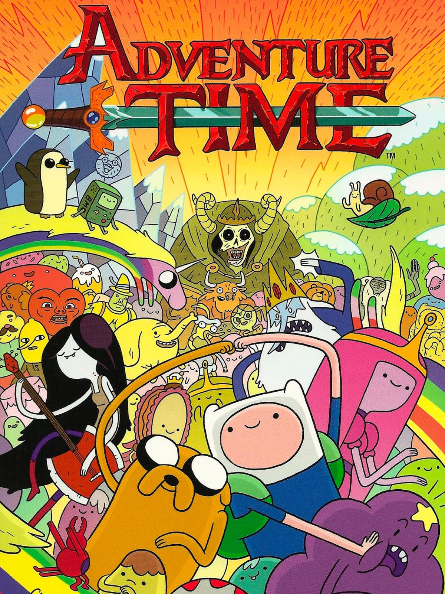
A série segue as aventuras de Finn, o Humano e o seu melhor amigo e irmão adotivo Jake, o Cão; que se aventuram na Terra de Ooo, num futuro pós-apocalíptico por volta de mil anos após a "Grande Guerra dos Cogumelos", sendo Finn presumidamente o último humano existente. A série é baseada numa curta produzida para o Random! Cartoons, um programa incubador de séries animadas da Nicktoons e da Frederator Studios. Depois do curta se tornar um viral na Internet, o Cartoon Network selecionou-o para uma série completa, que estreou oficialmente em 5 de abril de 2010.ª série, que é grandemente inspirada pelo RPG de fantasia Dungeons & Dragons assim como pelos jogos eletrônicos em geral, é produzida via animação desenhada à mão. Os episódios são desenvolvidos através do processo de storyboard, e um único episódio demora aproximadamente entre oito a nove meses para ser terminado, apesar de vários episódios serem feitos simultaneamente. Os membros do elenco de Adventure Time gravam as suas falas em conjunto em sessões grupais, ao contrário da técnica tradicional com sessões diferentes para cada dublador. A série também frequentemente emprega atores convidados para personagens menores. Cada episódio de Adventure Time tem em média onze minutos de duração; e é frequente que sejam transmitidos em pares, completando assim a meia hora necessária da grade horária do programa. A série já completou um total de seis temporadas, com contrato renovado até a oitava e um filme longa-metragem em produção. Desde a sua estreia, Adventure Time alcançou um relativo sucesso de crítica; com uma grande quantidade de fãs entre adolescentes e adultos, apesar do inicial foco infantil. A série era vista por 2 a 3 milhões de espectadores por semana, aproximadamente, em março de 2013. Adventure Time também já foi galardoado uma dúzia de nomeações para o Annie Award, com duas vitórias, cinco para o Prêmio Emmy do Primetime, com uma vitória apenas, e duas nomeações para o Critics' Choice Television Award e para o Festival Sundance de Cinema, entre outros. Em 2013, a série ganhou um Motion Picture Sound Editors Award, o Emmy supramencionado, e um prêmio British Academy Children's Award. A sua adaptação spin-off para os quadrinhos ganhou um prêmio Eisner Award e dois Harvey Awards. Ainda, a série já inspirou várias coleções de roupas e merchandise relacionados, jogos eletrônicos e quadrinhos. Esses fatores contribuíram para que muitos o considerem um dos melhores desenhos animados da atualidade. Em 24 de julho de 2018 a Cartoon Network anunciou que Adventure Time vai ter HQs intituladas Adventure Time: Season 11 #1 que vai continuar as aventuras de Finn e Jake após os acontecimentos do último episódio. A HQ lançou nos Estados Unidos em outubro deste ano.[2] Em 15 de outubro de 2018 também foi anunciado pela Cartoon Network que Adventure Time vai ter uma minisséries em HQs intituladas Hora de Aventura: Marcy e Simom que vão contar as aventuras de Marceline e Simon. A HQ vai ser lançada em janeiro de 2019 nos Estados Unidos.[3]
Finn
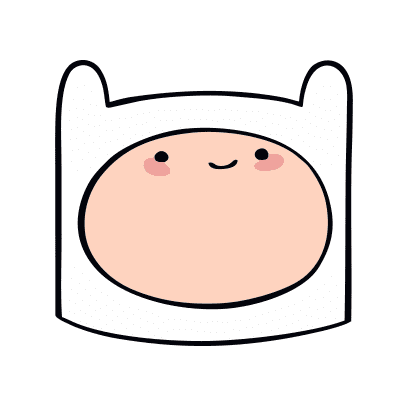
Finn nasceu em uma das ilhas habitadas por humanos fora da Terra de Ooo, filho de Martin Mertens e a médica Minerva Campbell. Tendo sido um vigarista conhecido, Martin é confrontado por um velho inimigo e forçado a fugir de casa com seu filho enquanto Minerva estava trabalhando. Martin e Finn saem em uma jangada, e logo depois são atacados pelo Grande Guardião das ilhas. Finn e Martin são separados como resultado, com Finn sendo enviado à deriva em direção a Ooo e Martin desaparecendo.[1] O bebê Finn chega até a Terra de Ooo, onde acabou ficando sozinho em um floresta, até os cães Joshua e Margaret o resgatar e o levarem para sua casa em segurança. Os dois o criaram como se fosse seu próprio filho, ao lado de seus irmãos Jake e Jermaine. Finn por muito tempo foi o único humano confirmado na Terra de Ooo. No episódio "Os Pais Dela", o pai de Lady Íris se surpreende ao vê-lo, pois achava que os humanos estavam extintos. Até "Susana Forte", Finn acredita que ele nunca conheceu outro ser humano. Finn fica melancólico quando ele pensa demais no assunto. No mesmo episódio, ele encontra Susana Forte. Mesmo que os outros membros da tribo de Hyoomanos de Susana revelam-se "gente peixe", a espécie de Susana é deixada a ambígua, até "Esconde-Esconde", onde é revelado que ela é Humana. Seu status como único humano de Ooo acaba quando Betty Grof viaja no tempo para o presente, em "Betty". Em "Lista do Que Fazer Antes de Morrer do Billy", Billy informa a Finn que seu pai humano está vivo na Cidadela. Isso faz que ele viaje até lá para salvá-lo, o tornado um dos humanos conhecidos na série. Em "Pré-Início", Dra. Gross revela que existem humanos fora de Ooo. Na minissérie "Ilhas", Finn viaja até as ilhas fora de Ooo e encontra uma civilização humana próspera e sua mãe, Minerva. Adam Muto disse que o fato de Finn ser o último humano de Ooo nunca foi a sua característica mais importante.[2] Finn é um garoto humano de 17 anos. No início da série Finn tinha cerca de 1,50 de altura, mas após "O Resfriador" ele teve um surto de crescimento. Em "Venha Comigo", Princesa Jujuba comenta sobre isso, dizendo que ele está ficando alto, quase da sua altura. Em "Obsidian" ele já claramente mais alto que ela. Ele tem vários dentes perdidos por morder árvores, pedras entre outras coisas. Sua forma varia um pouco dependendo de que artista de storyboard está desenhado ele. Seus olhos, embora careçam de detalhes e apareçam como pequenos pontos pretos devido ao estilo de arte da série, são azuis, como visto em "Together Again". Em "O Enquirídio!", seu olho esquerdo é verde, enquanto seu olho direito é azul, característica da condição genética heterocromia. No entanto, como afirmado por Andy Ristaino, seus olhos estavam assim devido ao contexto da cena, onde Finn estava sendo hipnotizado. Finn tem grandes cabelos loiros, herdados da sua mãe. Finn nunca foi visto sem o seu chapéu até "Para Cortar os Cabelos de Uma Mulher", onde revela-se que ele tem longas mechas douradas. Inicialmente, seu cabelo era maior que ele mesmo, e possuía um grande brilho. No mesmo episódio ele o raspa completamente e o dá para a Bruxa da Floresta. Com o passar do tempo seu cabelo vai crescendo novamente, até "Outro Jeito", onde ele já havia chegado aos seus ombros, e Finn o deixou crescer até "O Lich", e o raspou novamente em "Davey". Seu cabelo já voltou ao seu tamanho original em "Posso Entrar?". "Filhos de Marte", Finn é visto com o cabelo raspado novamente pois tinha pegado piolhos de Marceline. Apesar de tudo, ele demonstra não se importar muito com o seu cabelo. Em "Obsidian", Finn aparece como um adulto. Seu cabelo agora é mais curto e escuro, além dele ter uma barba.
Jake
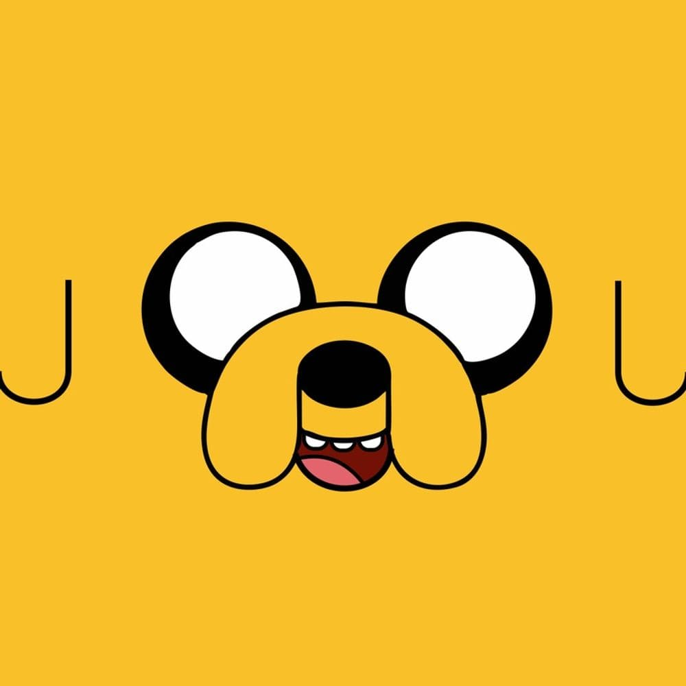
Jake, o Cão é um dos personagens principais de Hora de Aventura. Ele é um híbrido de cão/metamorfo, referido pelos outros como um "cão mágico". É o maior companheiro do humano Finn, seu irmão adotivo. Jake é casado com a iriscórnia Lady Irís e tem 5 filhos. O personagem é um grande ídolo de Finn, o acompanhando em aventuras por aí. Apesar de normalmente apresentar um comportamento infantil, Jake é extremamente maduro, constantemente dando conselhos e lições ao seus próximos. Um dos seus maiores passatempos é tocar Viola. Os investigadores Joshua e Margaret saem em uma missão de encontrar uma criatura que está assombrando Dona Tromba. Durante o processo de investigação Joshua é atacado pela tal criatura, que o mordeu na cabeça. Jake mais tarde nasce da pústula que havia crescido na cabeça do seu pai, no mesmo dia que seu irmão Jermaine Os seus poderes de elasticidade são frutos dessa mutação que houve com o alienígena Warren Ampersand e seu pai Joshua. Embora Jake não soubesse da origem de seus poderes até "Jake, Filho das Estrelas", e antes dessa descoberta ele acreditava que havia ganhado suas habilidades ao nadar em uma poça de lama mágica quando criança.[1][2] Pouco é explorado o passado de Jake e sua família durante a série. Em algum momento enquanto Jake e Jermaine ainda eram filhotes, seus pais encontraram um bebê humano chamado Finn abandonado em uma floresta, o resgatando e o criando como se fosse o seu filho. Com o passar dos anos Jake iria desenvolver uma grande amizade com o garoto humano.[3] Durante a infância, Joshua pressionava seus filhos a serem fortes e corajosos, o que influenciou muito no caráter dos três irmãos, enquanto Margaret costumava ser mais cuidadosa e protetora.[4][5] Em algum momento antes da morte dos seus pais, Jake acaba se mudando para a Casa na Árvore e entra para o mundo do crime, se envolvendo com criminosos como Tiffany, Gareth e Irmãos Repolho Voador. Depois de um tempo Jake abandona essa vida e passa a viver pacificamente lutando contra malfeitores junto com seu irmão Finn, construindo um grande legado como herói na Terra de Ooo, sendo respeitado até em outros planetas, como Marte. Além de ter conhecido várias entidades cósmicas poderosas como GLOB, A Coruja Cósmica e Prismo, com quem criou uma grande amizade.
BMO
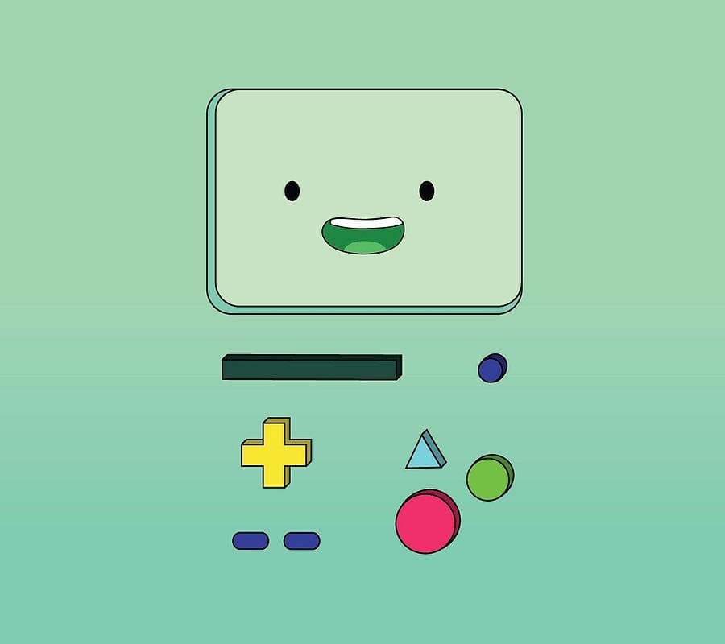
BMO (abreviação de Be More, Ser Mais, em português), mais tarde conhecido como Rei de Ooo é um videogame e computador criado por Moseph Mastro Giovani, e que logo depois se tornou de Finn e Jake. Ele faz a sua aparição na abertura da série. Assim como Finn e Jake lutam juntos, BMO é caracterizado como um amigo leal, confiante, companheiro e útil, além de que é protetor dos dois irmãos. A sigla de seu nome significa "Be More", ou seja, "Ser Mais". Quando Patrick McHale estava preparando um curta de animação para Cartoon Network, ele tinha um personagem robô chamado Raye para essa finalidade, que Pendleton Ward e McHale amaram. No entanto, quando Hora de Aventura foi oficialmente ao ar, Raye foi redesenhado e se tornou BMO. A voz de BMO era originalmente para ser semelhante a uma voz sintetizada por computador, mas como resultado de uma sugestão de Ward, a voz natural de Niki Yang (que também dublou Lady Íris) com alguns ajustes se tornou a voz do BMO. Como resultado, BMO fala com um sotaque coreano. Anteriores dubladores para o personagem incluem Dee Bradley Baker e Thurop Van Orman. BMO é um robô vídeo-game de Finn e Jake com sentimentos humanos. BMO expressa suas emoções través de seu televisor, que fica estampado em sua face. BMO foi criado na MO Company por Moe. Ele criou BMO na intenção de cuidar de seu filho, porém Moe nunca teve um. BMO é mostrado com o desejo de ser um humano, "praticando" assim todas as ações de um humano como urinar, escovar os dentes, tomar uma xícara de chá. Em "BMO Noire", BMO diz para Neptr/Rojotor que "não é como ele", ou seja, um robô. Nos primeiros episódios BMO parece ser apenas um videogame da década de 70, mas seu comportamento e importância vão mudando com o passar do tempo, tanto que Jake e Finn tratam-no como se fosse um amigo próximo. Beemo também tem características de outros eletrodomésticos como câmera de vídeo, videocassete ou alarme digital. Seu painel frontal (o seu rosto) muda de expressão constantemente e pode ser retirado para acessar o seu sintetizador de som, conforme mostrado no episódio "O Que Faltava". Mesmo mencionando o fato de não ter sentimentos, nota-se que ele demonstra, em vários episódios, sentir medo, raiva, alegria ou tristeza. No episódio "BMO Noire" ele tem um caso amoroso com uma galinha a qual ele deu o nome de Lorraine, e no episódio "Cinco Historinhas" é revelado que ele gostaria de ser um menino e não um robô, inclusive imitando as ações dos humanos, como escovar os dentes ou urinar e no episódio "BMO Perdido" mostra que iria se casar com uma bolha que conheceu na floresta, já que ambos não sabiam o que significava, antes de ser estourada por Jake virando Ar.
Princesa Jujuba
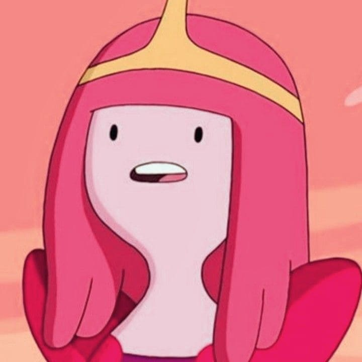
Bonnibel nasceu a partir de um grande conjunto mágico de doces conhecido como Mãe Goma, muitos anos após a Guerra dos Cogumelos, que se espalhou pelas ruínas das antigas cidades humanas.[1] Ela, junto com Neddy, acidentalmente se separaram da Mãe Goma. Após isso, Bonnie aprendeu a pensar e se sentir viva; seus "pais" permaneceram no subsolo do Reino Doce.[2] Quando mais velha, Bonnie sobreviveu na devastada Terra de Ooo, onde acabou se abrigando em uma casa abandonada próxima a um rio radioativo junto com seu irmão. Se sentindo sozinha, ela cria uma família com pedaços da Mãe Goma, assim surgindo Gumbald, Lolly e Chiclete. Ela cuidadosamente havia os criado para que se encaixassem em arquetípicos específicos para que uma boa dinâmica familiar fosse criada e torna-se sua vida menos solitária. No entanto, Gumbald, seu tio, tinha uma ânsia de poder e queria construir uma cidade para governar. Jujuba não gostou da ideia e interceptou seus planos criando o Lago Caramelo onde a cidade iria ser erguida. Após isso, Gumbald ficou paranoico com o jeito que sua sobrinha controlava a família para que ela sempre a agradasse, então manipulou os outros a o ajudar a criar um plano para se livrar dela. Gumbald acaba criando uma substância que pode enfraquece-la e a reduzi-la a um ser doce senciente totalmente manipulável. O tio então acaba traindo Lolly e Chiclete, os fazendo ingerir o soro. O plano de Gumbald falha miseravelmente quando Jujuba faz o soro espirrar em seu rosto, o transformando em uma tigela de ponche.[3] Bonnibel decidiu que a melhor decisão a se fazer era deixar todos do jeito que estavam, e se autoproclamou a "princesa" deles. Desde então, todos os súditos criados por ela era feitos para serem leais e obedientes, para que um evento como aquele não se repetisse. Ela retomou a ideia de seu tio e começou a construir um reino. Anos depois, Jujuba conhece Shoko, uma mercenária enviada para roubar um amuleto precioso que ela tinha. Shoko a engana dizendo que foi deixada inconsciente por um grupo inimigo de Jujuba, e cria uma amizade com ela. Shoko opta por abandonar sua vida hostil e viver uma vida normal, porém um membro da Gangue dos Banheirinhas a ameaça de morte se ela não cumprir sua missão. Princesa Jujuba cria um braço robótico a ela, e pede ajuda para construir seu reino. Se vendo sem opções, Shoko acaba roubando o amuleto para continuar vivendo, porém é atacada por um dos Guardiões Chicletes e cai no rio radioativo que estava sendo vedado.[4] Princesa Jujuba cria uma amizade com Marceline, a Rainha dos Vampiros, e eventualmente as duas se envolvem romanticamente. Bonnie frequentemente deixava de lado compromissos importantes para ficar com Marceline. Mas com o passar do tempo, o estresse de governar um grande reino estava deixando Jujuba cada vez mais ocupada e afastada de Marcy. Essa briga atingiu o seu ápice quando Jujuba precisou fazer uma visita diplomática ao Reino de Vidro, que pediu sua ajuda para derrotar um dragão apelidado de Larvo. Marceline não levou a situação a sério e a atrapalhava tentando chamar sua atenção ao máximo, quando Jujuba perdeu a paciência e a atacou verbalmente. Magoada, Marceline canta uma música emotiva falando como "não se importava" com ela, fazendo duas encerrarem seu relacionamento e criando uma inimizade que duraria anos.[5] 15 anos antes do início da série, Princesa Jujuba encontra Phoebe, que havia sido abandonada pelo Rei de Fogo e estava queimando as florestas do seu reino. Ela se encontra com o Rei de Fogo e o pede para controlar a situação. Princesa de Fogo acaba ficando presa por grande parte da sua vida.[6]
Marceline
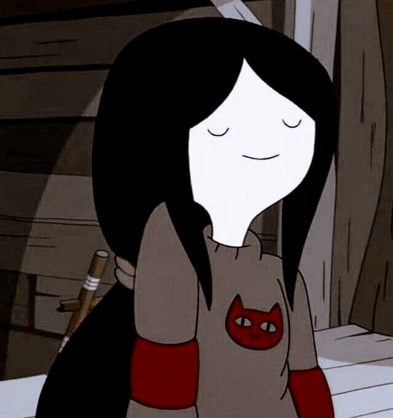
Marceline Abadeer, a Rainha dos Vampiros é uma das personagens principais de Hora de Aventura. Apesar de sua primeira aparição demonstrar uma natureza antagonista, com o passar da série a personagem se torna uma amiga próxima de Finn e Jake, e vai evoluindo sua personalidade e relacionamentos. Ao contrário dos vampiros convencionais, ela não precisa de sangue para viver, apenas se alimentando da cor vermelha. Ela é uma ávida musicista e cantora. Em algum momento antes do início da série, Marceline nasceu, filha do poderoso demônio e rei da Noitosfera Hunson Abadeer, e de uma humana chamada Elise. Marceline e sua mãe, Elise, sobrevivem aos eventos da devastadora Guerra dos Cogumelos, que matou grande parte da vida na Terra. Uma de suas primeiras memórias retratadas na série, foi dela e sua mãe em um trailer, contando a história de como sua mãe conheceu seu pai.[2] No momento, Elise estava muito doente, mas não queria demonstrar isso a sua filha. Conforme Elise ficava mais doente, ela mandava Marceline a um bunker onde estava acontecendo uma "festa", para deixa-la protegida. Porém um dia Elise acaba falecendo, deixando sua filha, o que a levou a acreditar que sua mãe tinha a abandonado devido a seus poderes de demônio, que constantemente assustavam sua mãe.[3] Mais tarde, Simon Petrikov, a encontra nas ruínas de uma cidade chorando, onde ele pega um animal de pelúcia (no qual ela a apelidou de Hambo), e dá pra ela com o intuito de animá-la. Durante esse momento, ela tem 7 anos, como confirmado por Simon.[4][5] Com o passar dos anos, os dois acabam desenvolvendo uma grande relação afetuosa, com Simon sendo uma figura paterna para Marceline. Porém devido ao uso da Coroa, Simon vai ficando mais instável mentalmente (ver: Efeitos da Coroa no Rei Gelado), e antes que possa machucar ou até matar Marceline, ele é forçado a deixá-la sozinha. Durante esse momento, Simon deixou várias mensagens e até convocou Hunson para cuidar de Marceline. O saída de Simon convoca então um trauma que ela já tinha sofrido com sua mãe anteriormente, o abandono. Marceline então é obrigada a viver com seu pai, porém acaba o odiando devido a diversas de suas atitudes no qual a deixa muito frustrada. Quando Hunson come as batatinhas que ela guardou para si mesma, ela acaba se enfurecendo por seu pai não a respeitar, então ela corta todos os laços que tem com seu pai, e sai da Noitosfera.[2][6][7] Nos anos seguintes, Marceline vaga pela Terra de Ooo, e acaba formando amizade com uma tribo de humanos sobreviventes da guerra. Com seus poderes, ela se torna a guardiã deles, os protegendo de vampiros e outros monstros. Marceline então descobre que com seus poderes de demônio, ela tem a capacidade de sugar almas, assim com seu pai, e com isso, ela adquire os poderes de quem ter sua alma absolvida, e foi assim que ela conseguiu suas habilidades, matando a poderosa Corte dos Vampiros. Embora, no confronto com o último vampiro de Ooo, o Rei, ela acaba o matando, porém ele consegue a morder, fazendo ela se tornar a Rainha dos vampiros. Two Bread Tom e sua tribo acabam fugindo de Ooo, pois apesar dos vampiros terem sido exterminados, ainda existiam outros perigos e dificuldades naquele lugar.[2] Marceline então volta a sua antiga vida solitária. Em algum momento, Marceline se encontra com a soberana do Reino Doce, Bonnibel Jujuba, no qual acaba se envolvendo romanticamente. Bonnie frequentemente deixava de lado compromissos importantes para ficar com Marceline. Mas com o passar do tempo, o estresse de governar um grande reino estava deixando Jujuba cada vez mais ocupada e afastada de Marcy. Essa briga atingiu o seu ápice quando Jujuba precisou fazer uma visita diplomática ao Reino de Vidro, que pediu sua ajuda para derrotar um dragão apelidado de Larvo. Marceline não levou a situação a sério e a atrapalhava tentando chamar sua atenção ao máximo, quando Jujuba perdeu a paciência e a atacou verbalmente. Magoada, ela canta uma música emotiva falando como "não se importava" com ela, fazendo duas encerrarem seu relacionamento e criando uma inimizade que duraria anos.[3] Mais tarde, ela se envolve com um mago chamado Ash, e se muda para a Casa na Árvore. Mas o seu relacionamento durou pouco tempo, depois que Ash vendeu Hambo (ursinho dado por Simon), para uma bruxa chamada Maja.[7][8] Depois de um tempo, Marceline conhece Finn e Jake, quando ela os força a deixar a Casa na Árvore, pois tecnicamente a casa ainda é dela. No entanto, ela deixa a casa para eles quando encontra uma moradia mais apropriada.[9] Eventualmente ela desenvolve uma amizade com Finn, em "Criado" e "Veio da Noitosfera". Marceline então convida Finn e Jake para gravarem uma música, e ela acaba falando de seus problemas com o pai. Na esperança de reconciliar-los, Finn invoca Hunson Abadeer para Ooo. Finn descobre que existe uma animosidade entre os dois, mas quando toca a "Música das Batatinhas", Hunson entende um pouco sua filha, e há um momento de compreensão entre eles.[10] Ash, tentando uma reconciliação, se disfarça do "espírito animal" de Marceline, e engana Finn e Jake dizendo que ela foi enfeitiçada por um mago. Seguindo suas instruções, Finn e Jake entram na mente de Marceline em busca de seu núcleo de memória para "reverter" o feitiço. Consequentemente os irmãos acabam achando o núcleo e o dão para Ash, apenas pra descobrir seu truque. O "núcleo" era a memória do término dos dois, cuja agora foi removida da mente de Marceline. Para resolver o problema, Finn usa o mesmo feitiço de Ash para transportar Marceline para suas memórias, onde ele tem a memória de ter visto a memória do rompimento dos dois. Todos então começam a bater incessantemente em Ash.[7] Em "Retorno a Noitosfera" e "Monstrinha do Papai", Hunson, tentando se reconectar com a filha, a dá o amuleto da família, no qual a transforma em um demônio, fazendo ela governar a Noitosfera junto com ele, mesmo contra a sua vontade. Depois de muito esforço, Finn e Jake conseguem a libertar do amuleto. Marceline diz que apenas quer que seu pai a entenda. A inimizade de Marceline e Jujuba acaba esfriando após "O Que Faltava", e as duas acabam cooperando de vez em quando. Com isso, Marceline pede ajuda a Jujuba para recuperar Hambo, que estava com Maja esse tempo todo. Em troca, Jujuba dá a camisa que Marceline a deu quando se conheceram, para que possa recuperar o objeto especial de sua amiga.[8] Eventualmente Marceline se encontra com seu antigo amigo Simon Petrikov (agora, Rei Gelado), porém acaba ficando assustada e enojada com o que a coroa fez com ele. Está explicito que Rei Gelado tentou falar com ela em todos esses anos, embora Marceline se lembrasse de como Simon era, ele parecia não recordar dela, e nem do significado das mensagens que deixou para ela, o que a deixa enfurecida e consequentemente magoada. Rei Gelado é forçado a ler as mensagens e tem um resquício de memória, demonstrando arrependimento.[11] Em "Betty", ela é contatada por Simon que tinha perdido seus poderes, assim voltando a sua forma original. Ela acaba sacrificando Hambo, para que um portal do tempo seja aberto e que Simon possa pedir desculpas pelos atos que cometeu por causa da coroa para sua esposa Betty Grof. Devido a onda de eventos do episódio, Simon não consegue permanecer nessa forma, mas consegue reafirmar o quanto se importa com Marceline. Os dois tem uma relação mais instável depois desse eventos, e se visitam diversas vezes, como em "Menininho Mau" e "Coroa Quebrada". Cansada de ser uma vampira, Marceline pede a Jujuba para que extraia sua essência de vampira e volte ao seu "estado normal". A essência acaba trazendo de volta a vida os vampiros que ela matou no passado. O reaparecimento dessas entidades força a todos a os exterminar novamente, exceto o Rei Vampiro, que foi neutralizado removendo sua essência, assim como Marceline. A partir de "A Nuvem Negra", ela volta a ser uma vampira, mas agora em plenitude com sua imortalidade, e com uma grande mudança de personalidade. Durante os eventos de "Hora de Aventura: Ilhas", Marceline é transformada em uma criatura marshmallow senciente por magia elemental. Em sua forma doce, Marceline é brincalhona, mas ingênua ao novo mundo ao seu redor. Inevitavelmente Marceline volta a sua forma normal, e mais tarde conversa com BMO sobre isso. Disposto a ver um show de sua filha, Hunson volta a Ooo, inicialmente envergonhando sua filha na frente de todos, mas no final Marceline fica feliz ao saber que seu pai está disposto a apoia-la.
Rei Gelado
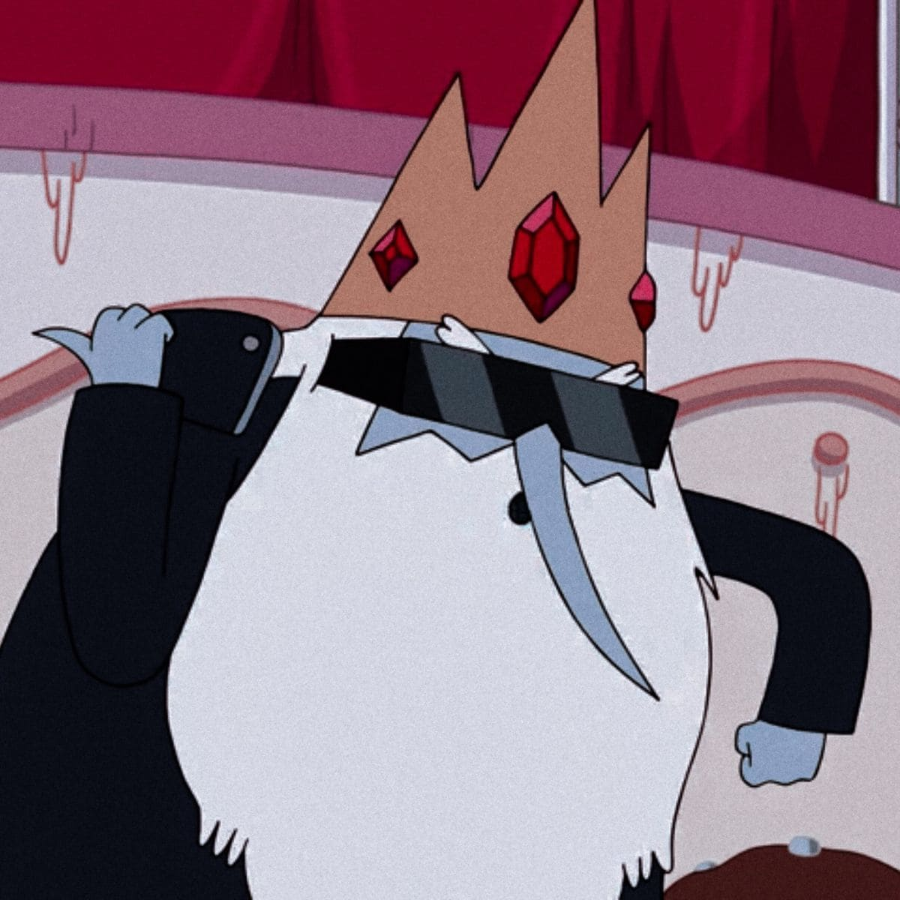
Simon Petrikov, anteriormente conhecido como Rei Gelado é um personagem concebido para ser o principal antagonista de Hora de Aventura. Originalmente retratado como um vilão que sequestra princesas regularmente, a personalidade do personagem foi posteriormente expandida, revelando que ele era um idoso de bom coração, mas incompreendido, com sentidos e moral completamente distorcidos pela sua coroa, sofrendo de solidão e perda de memória. As temporadas posteriores revelam sua trágica história. Em "Venha Comigo", Rei Gelado é permanentemente revertido para sua forma humana depois de quase ser digerido por GOLB. Tempos antes da Guerra dos Cogumelos, Rei Gelado era um antiquário chamado Simon Petrikov. Ele era noivo de Betty Grof, no qual a chamava de "princesa". Simon acaba encontrando o Enquirídio durante uma expedição a cordilheira Hindu Kush no Paquistão. Em algum momento ele comprou uma coroa de joias de um comerciante no norte da Escandinávia. Ao chegar em casa, Simon colocou a coroa, que o fez desmaiar e ter estranhas visões. Simon não se lembrava do que havia dito ou feito enquanto usava a coroa, embora fosse o suficiente para assustar sua noiva. Simon nunca mais viu Betty novamente e durante o início da Guerra dos Cogumelos, começou a fazer gravações em fitas de VHS para que as pessoas conhecessem sua história. Após o fim da Guerra dos Cogumelos, Simon encontrou uma garotinha chamada Marceline chorando. Para acalmá-la, ele a deu um bicho de pelúcia no qual ela o apelidou de Hambo. Depois isso, Simon cuidou da garota durante anos, porém, com a necessidade de usar a Coroa para se proteger dos perigos daquele mundo, Simon acabou tendo sua sanidade mental cada vez mais deteriorada (ver: Efeitos da Coroa do Rei Gelado). Com a possibilidade de acabar machucando Marceline ou até pior, ele foi obrigado a deixá-la após gravar sua última fita. Antes disso, ele invocou Hunson Abadeer, pai de Marceline, na tentativa de encontrar alguém que cuidasse dela, alguém que segundo ele "não a abandonaria do jeito que ele fez".
Princesa Caroço

A Princesa Caroço é uma princesa que flutua como nuvem e é da dimensão da Terra do Caroço, lugar habitado por pessoas "Encaroçadas". Ela é como as pessoas encaroçadas em geral. Ela é metida, rude e mal educada, e usa a palavra "caroço" no lugar de palavrões e as vezes a palavra "gosma" no lugar de expressões. Os "caroços" de sua espécie podem ser transmitidos através de mordidas, algo semelhante às regras de lobisomens e zumbis. A única cura é sentar-se em uma esfera lisa em particular, encontrada na Terra do Caroço, antes do pôr do sol que é guardada por três outros encaroçados. Princesa Caroço parece uma nuvem roxa e fala com uma voz um pouco profunda e nasal. Ela tem dentes afiados e uma estrela amarela na testa que brilha enquanto ela está flutuando. Parece haver cabelo curto em seu corpo, que ela afirma ser mais de seus "caroços". Quando ela bate a si mesma (dizendo que ela pode ser "lisa"), ela se parece com uma bola com os braços. Ela não é vista vestindo uma coroa, como a maioria das outras princesas; no entanto, a estrela em sua cabeça provavelmente representa a realeza, dado que os únicos outros encaroçados com essa característica são seus pais. A estrela em sua cabeça é realmente uma jóia que é muito profunda dentro dela, como mostrado no episódio "O Lich". Ao usar todas as jóias recolhidos para abrir o livro Enquirídio, a jóia da Princesa Caroço apenas ricocheteou e foi a única jóia que não foi usada no processo.
Lady Íris
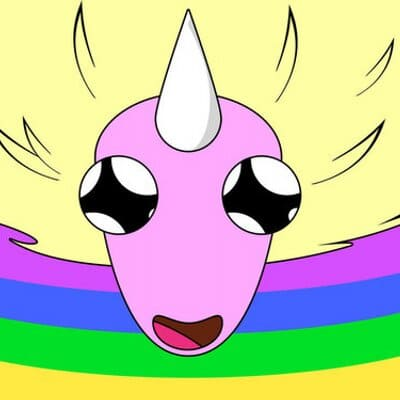
Lady Iriscórnio "Íris" (também conhecida como Lady Licorni, mas presumivelmente) é a leal companheira da Princesa Jujuba, uma iriscórnio que fala coreano. Ela mostra gostar de viola como visto no episódio piloto, onde ela conhece Jake. Assim como seu povo, ela tem poderes de mutação de cor e, como seus pais, adora cães, diferente do seu povo, pois as duas raças têm lutado ao longo da Dimensão Cristal durante séculos. Lady Íris é a esposa de Jake. Os dois, quando se conheceram, se interessaram um pelo outro graças ao amor dos dois pela viola. Tiveram filhos que cresciam rápido. Lady-Íris tem a habilidade de voar, atravessar paredes e transportar-se, no episodio "Jake o Pai ", Jake esta cuidando de seus filhotes, e percebe que eles herdaram os mesmos poderes de Jake e Lady-Íris. Também pode usar seu chifre para mudar a cor de qualquer pessoa ou objeto, no episodio "Minhas Duas Pessoas Favoritas " Lady-Íris explica para Finn que ela pode voar porque seu corpo pode interceptar os raios de luz refletidos do sol sobre eles (iriscornios). No mesmo episódio ela mostra que mora em um estábulo na "Floresta De Algodão Doce", como seus pais, pode disparar um feixe de luz de cor pelo seu chifre, que aparentemente dói. Além disso, Lady-Íris pode ser esticar-se um pouco como se pode ver quando aterrisa (ela pode ter limitados poderes elásticos). E é revelado em "Sustos ", que pode atravessar paredes e prender pessoas em seu corpo, também pode tocar viola como Jake. Aparentemente Lady-Íris também tem grandes habilidades em video-games demonstrado em "Minhas Duas Pessoas Favoritas".
Princesa de Fogo
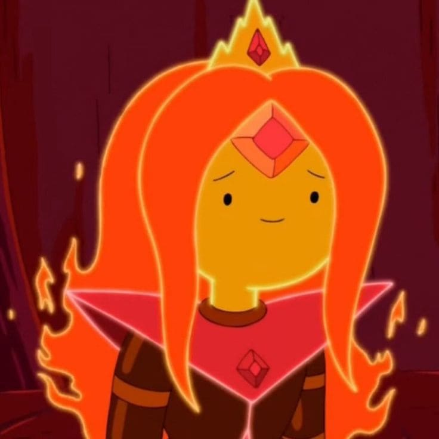
Phoebe (como revelado em "O Resfriador"), também conhecida como Princesa de Fogo (Rainha de Fogo, como ela é atualmente chamada no Reino de Fogo), é a melhor amiga de Canelinha, e ex-namorada de Finn. Ela teve sua primeira aparição em "Incêndio". Ela é filha do Rei de Fogo. Ela passa a ser uma personagem principal a partir da 5ª temporada. Apartir do episódio "Terra e Água" ela passou a ser a nova governante do Reino de Fogo. Princesa de Fogo tem uma personalidade volátil, ela geralmente tem um comportamento calmo, embora com tendências bastantes frequentes a oscilações súbitas e violentas de humor. Ela é descrita como apaixonada por Finn, mal pelo Rei de Fogo e intensa por Pendleton Ward. O Rei de Fogo também observa que ela é difícil de controlar. Ela parece ser muito sensível e rápida para julgar. Ela também é propensa a ataques não provocados de agressão, como mostrado quando ela joga bolas de fogo em seus súditos apenas por sussurrar. Princesa de Fogo também é impressionável de uma forma positiva. Ela está muito feliz quando Finn a chama de linda. Ela também estava interessada quando Jake estava dando-lhe presentes no episódio "Incêndio" e animada quando seu pai a liberta. Embora essa excitação rapidamente se transforma em raiva quando Príncipe Finn a rejeita. No episódio "Quente Demais", Princesa de Fogo mostra curiosidade sobre seu novo ambiente, examinando flores. Isto configura-las no fogo e ela parece surpresa com a reação, indicando que ela não sabe muito sobre diferentes terras além do Reino de Fogo. No final do mesmo episódio, ela mostra que ela gosta de Finn, mas acha que eles não podem ficar juntos porque eles são elementais opostos, chamando Finn um elemental da água por causa das lágrimas que ela sentia nele. Em "Pegando Um Foguinho", ela parece ser mais calma e capaz de lidar com uma parte dela de fogo. Isto é ilustrado quan Finn pula na água, enquanto seu pé estava pegando fogo, mas ela visivelmente não reage. Isso também é mostrado em "Caverna de Ossos", quando Finn jogou uma tocha acesa na água, ela não mostra qualquer sinal de dor, apesar de que era ela quem acendeu. Isso pode ser devido a Finn e Princesa de Fogo estarem acostumados um ao outro. Em "O Rei Minhoca", uma introdução a impaciência é feito por Princesa de Fogo quando Finn se recusa a tomar a sopa que ela lhe oferecia. Ela ordena que ele instantaneamente que ele tome a sopa "Toma a sopa agora!" em resposta Finn, dizendo lhe para esperar. Em "Caverna de Ossos", Princesa de Fogo é mostrada ainda ter o desejo de ser destrutiva, embora que ela diz que só vai destruir coisas más. A impaciência da Princesa de Fogo também é notada, como ela fica entediada enquanto Finn estava pesquisando em torno da masmorra. Em "Traje de Jake", ela é vista mais calma e capaz de controlar sua raiva, apesar de Jake que estava controlando Finn, o envergonhava na frente de sua família, fazendo-o dançar sua música bebê Finn. Quando ela descobriu a aposta, ela deveria ter gritado com ele, em vez disso, ela acha que é muito incondicional de Jake para fazer isso, então ela deseja boa sorte a Finn. Em "Frio e Fogo", ela não gosta quando alguém insulta sua relação com Finn, mostrando quando ela batalhava com Rei Gelado pela carta que ela pensou por ter sido enviada por ele. Está provado nesse episódio que ela pode diminuir seus níveis de raiva, ainda mais, o que é visto quando ela não enfurece com Finn quando ele admitiu que escreveu a carta forjada. No entanto, ela estava inconsolável neste fato. Princesa de Fogo mostrou também que não suporta que os outros sejam desonestos, já que quando assumiu o Reino de Fogo colocou como regra para todos terem sinceridade total. Como uma criança, Princesa de Fogo era caótica e de espírito livre. Ela provou e afirmou em ser mais poderosa que seu pai como um bebê. No entanto, seu pai não aceitava ter uma filha mais poderosa que ele e deixou-a "vaguear no mundo exterior", no entanto ela se depara com uma floresta próxima e queimou-a inteira, enquanto ria e corria como uma bola de fogo. Chegando ao Reino Doce, Princesa Jujuba viu o bebê de fogo e preparou-se para trazê-la de volta para o Reino de Fogo. Lá, Jujuba disse para o Rei de Fogo manter o bebê sob controle ou ela mesma cuidaria disso, mas ele nega não querendo-a de volta. Princesa Jujuba insiste para ele leva-la de volta. Depois de uma discussão, eles entram em um acordo e decidem prender o bebê real em uma lâmpada gigante para o resto de sua vida.
Dona Tromba
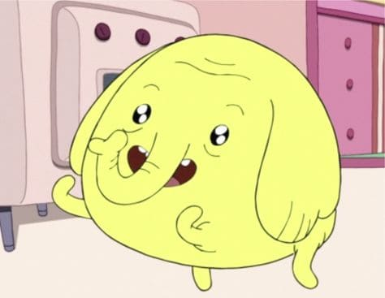
A Dona Tromba é uma pequena, amarela e idosa elefanta amiga de Finn e Jake. Dona Tromba gosta de maçãs e mostra uma habilidade excepcional para assar tortas de maçã. Além disso, durante seu episódio de mesmo nome, ela vai a uma aventura com Finn e Jake para encontrar e comer a melhor maçã da Terra de Ooo, a Maçã Gema de Cristal. Após morder, ela desaparece no ar, o que faz com que seus amigos achem que ela morreu, enquanto, na verdade, foi teletransportada para Dimensão Cristal, onde vivem os Homens Cristais, e ela se torna a soberana deles. Em outro episódio, Jake jura nunca mais bater ou salvar alguém com violência pois no começo deste episódio acabou machucando Finn, e por isso se torna um pouco mais demorado de salvar Finn antes que ele se torne um Homem de Cristal. Dona Tromba logo a seguir é salva por Jake. Durante o curso de sua aventura com Jake e Finn ela geralmente provou ser uma aventureira pobre, que às vezes tentou recorrer ao seu "charme" para ajudar a derrotar os inimigos perigosos. Mas no final acabou sendo realmente útil todo o "charme" da Dona Tromba.
Gunter
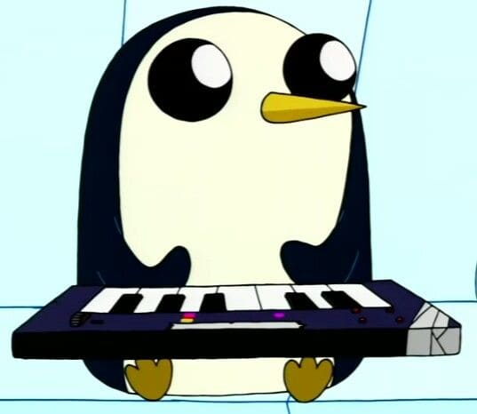
Orgalorg é o nome dado ao ser mascote (entidade cósmica com forma de pinguim) mais próximo ao Rei Gelado, embora que, em "Esposa Princesa Monstro", é mostrado que vários pinguins têm variantes desse nome, mas o Rei Gelado pronuncia os nomes dos outros pinguins diferente (como já foi falado por Natasha Allegri e Andy Ristaino). O Rei Gelado possui um relacionamento mais próximo com Orgalorg, como seu servo pessoal. Enquanto os outros pinguins que trabalham e vivem com ele são de menos importância. Gunter gosta de quebrar objetos de vidros, comer meias, bagunçar o quarto do Rei Gelado, rabiscar as paredes do Castelo do Rei Gelado e derrubar garrafas. Originalmente, Gunter era um monstro que dominava planetas chamado Orgalorg, mas o Rei de Marte mandou Grob Gob Glob Grod o exilar num planeta que naquele momento era desabitado, chamado Terra. A gravidade do planeta o fez ficar nessa forma e esquecer tudo. Em "Venha Comigo", Gunter usou as habilidades de concessão de desejos da coroa do Rei do Gelo para "tornar-se" Coisa de Gelo, assumindo uma forma parecida com a de seu antigo mestre. Como o resto dos pinguins, Gunter possui grandes olhos negros com um circulo branco no centro (como Jake e Lady Íris). Costas preta, rosto e barriga branca bico pontudo e É uma criatura gigante humanoide sem pernas, tem uma estrutura cor de abacaxi que cobre sua parte inferior e todo o corpo, tem um aro em volta da cabeça, sua cabeça é uma parte branca com vários olhos pretos (visíveis são apenas quatro olhos) e um bico no topo da cabeça. Quando se torna a Coisa de Gelo, a Coroa de Gelo é transformada em sua cabeça com as três jóias (embora ele inevitavelmente perca uma) acima de seu longo nariz azul. Ele tem uma barba branca / cabelo, como Rei Gelado. Ele usa uma túnica azul similar a Rei Gelado e tem duas orelhas em forma de raio e grandes pés de pássaro, semelhantes ao Urgence Evergreen. No futuro, a Coisa de Gelo parece similar, mas parece ser apenas uma barba voadora sem torso, braços ou pernas, com um nariz, boca e duas gemas com uma faltante e muito maior do que antes.
Conde de Limãograb
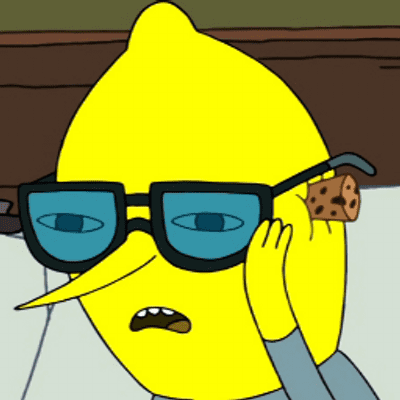
Conde de Limãograb foi criado pela Princesa Jujuba, para que ele à substituísse quando ela não pudesse mais reinar. Limãograb foi a primeira experiência de Princesa Jujuba que deu errado, como visto em "Jovem Demais". No mesmo episódio, quando a Princesa Jujuba estava com 13 anos e é incapacitada de reinar, Limãograb tomou seu lugar para governar o Reino Doce. Ele também governa um reino, o Condado de Limãograb. Em todos os episódios que ele aparece, é possível perceber que seu temperamento é "alto", com altos níveis de raiva e ódio. De acordo com ele, quando a Princesa Jujuba criou o segundo Limãograb, ela acabou deixando por lá uma receita de como fazer doces ganharem vida, porém, ela retirou a memória da cabeça deles. A pele tem a cor e as texturas de um Limão amarelo, sua cabeça se assemelha a forma de um limão e tem um nariz alongado e pontudo, semelhante ao do Rei Gelado. Seu corpo e suas pernas eram finas,mas no último estado de vida, ele ficou acima do peso. Ele veste um terno cinza escuro, botas pretas e um cinturão verde com uma fivela amarela com forma de limão. Também um par de óculos grandes e grossos utilizadas ocasionalmente para ler, e também tem um pijama azul. Seus dentes são pontudos e afiados como visto em Masmorra do Mistério, também tem o mesmo olho do Finn (Farmworld). Por ter devorado seu irmão, Limãograb 2, agora seu pescoço não é visível. Está com uma medalha em forma de limão, que antes era sua faixa.
Princesa Café da Manhã
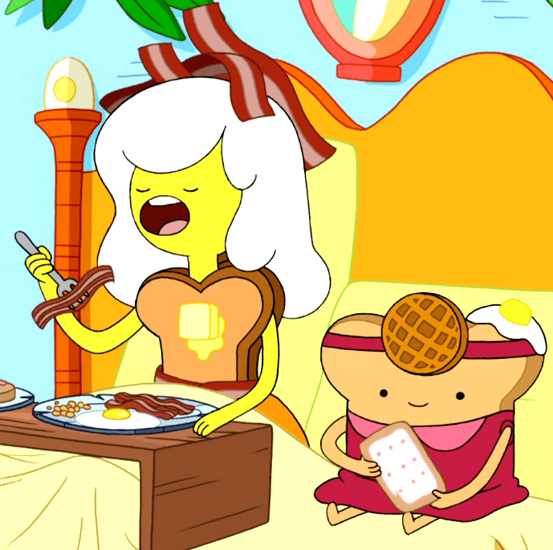
Princesa Café da Manhã é uma personagem que apareceu no episódio "Batedor". Ela é a governante do Reino Café da Manhã e irmã da Princesa Torrada e da Princesa Strudel. Ela tem cabelo de clara de ovo, uma coroa feita de bacons e tem o tronco de uma torrada com uma manteiga derretida, tem uma saia de panquecas, sapatos de casca de ovo e usa um cinto de bacon. Sua pele é amarela e ela tem pequenos olhos pretos.
Princesa Geleca
A Princesa Geleca é uma personagem menor em Hora de Aventura. Ela é a princesa do Reino Geleca. Ela teve sua primeira aparição em "Prisioneiras do Amor" junto com as outras princesas que Rei Gelado capturou. Em "Lealdade ao Rei" ela quer se casar com o Rei Maneiro, mas depois de descobrir que, na verdade, ele é o Rei Gelado, ela desiste . É uma gosma em tons de verde e amarelo e usa uma tiara de princesa dourada com uma jóia verde.
Princesa Tartaruga
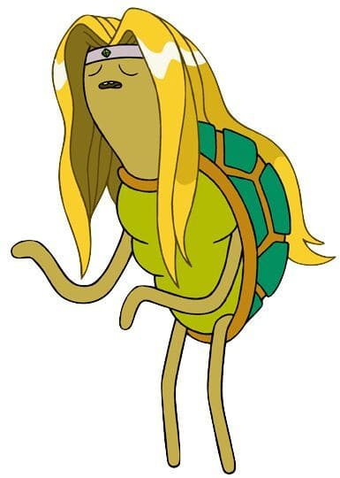
Princesa Tartaruga é uma princesa de Ooo. Ela é a dona/gerente de uma Biblioteca. Ela é uma das princesas que são capturadas por Rei Gelado. Ela apareceu primeiro em "O Que é Vida?" na zona de imaginação do Rei Gelado, ela apareceu também em "Lealdade ao Rei" como uma adoradora do Rei Maneiro. Ela aparece em Pedro Papel, na biblioteca, o tempo todo tentando controlar o volume de Finn. Ela aparece em "Esposa Princesa Monstro", onde Rei Gelado rouba metade de sua cabeça para fazer uma princesa esposa com partes de princesas. Ela re-aparece também em "Te Peguei!", em que revela ser melhor amiga de Princesa Caroço, trazendo até tortas de frutas para seu acampamento. Em "Menininho Mal", ela re-aparece, trancada em uma jaula, assim como outras princesas pelo Rei Gelado, enquanto ele conta suas histórias malucas de Fionna e Cake, e como as outras princesas, ela detesta, e depois ouve a história da Marceline e adora. Ela é, como o nome indica, uma tartaruga, com aparência humanóide, ela tem longos cabelos loiros, a pele é verde meio-acinzentado. Ela tem uma tiara verde parecida com a tiara da Princesa Jujuba. Ela tem um casco verde claro, escuro e bege. Seus olhos também estão quase sempre fechados.